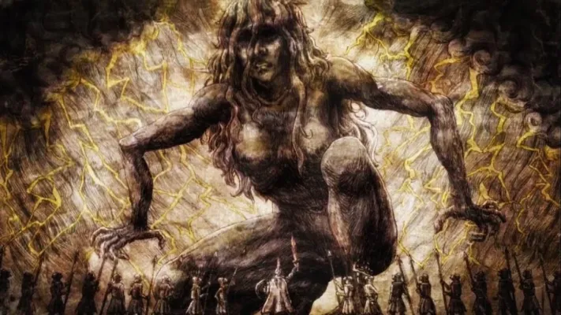
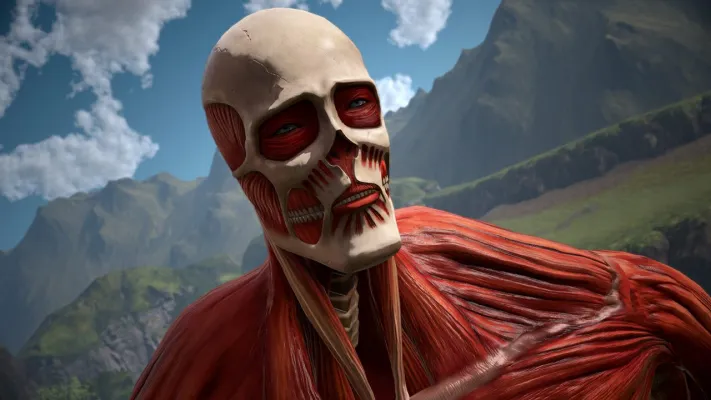
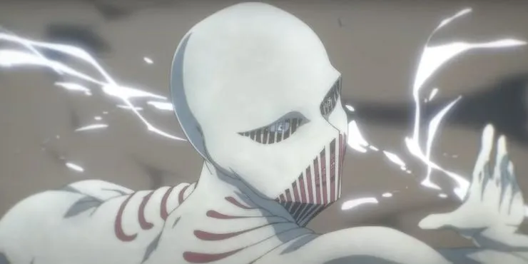
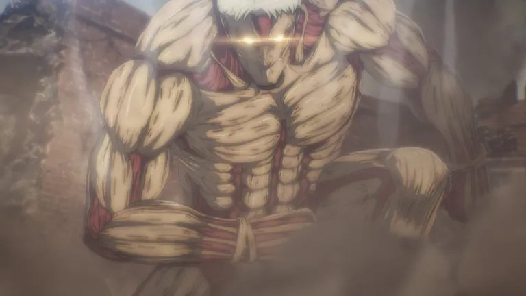
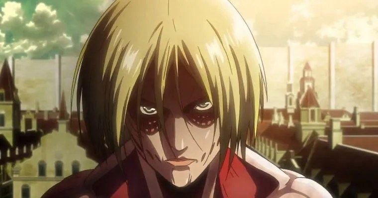
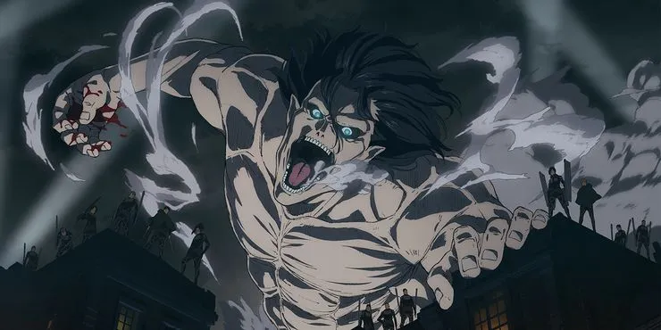
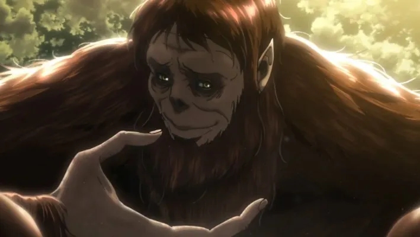
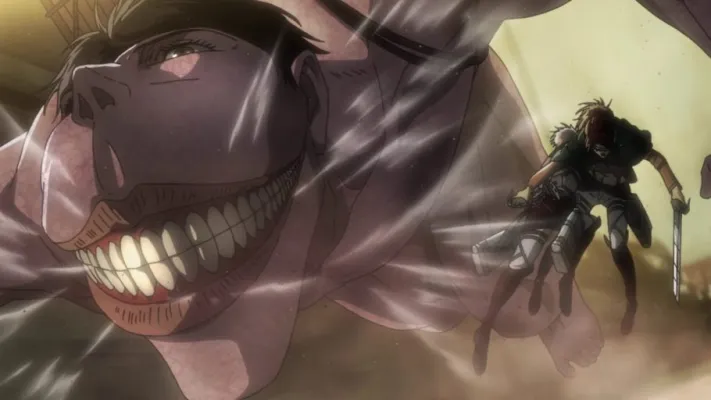

O anime começa nos apresentando Eren Jaeger, Mikasa Ackermann e Armin Arlelt, as três principais figuras do anime. Durante esses primeiros episódios vemos a vida pacata dessas pobres crianças. Porém tudo muda quando descobrimos que as muralhas que rodeiam a cidade separam os humanos dos Titãs. Em seguida é contado que não há Titãs faz mais de 100 anos e os únicos que podem sair da muralha são os membros da tropa de exploração. Então descobrimos que Eren tem o sonho de um dia entrar para a tropa de exploração. Durante esse tempo somos apresentados ao regimento, que tem como objetivo manter a ordem dentro das muralhas, como uma polícia. Então coisa vai coisa vem, e o pai de Eren lhe dá uma chave que servirá para abrir o porão da casa em um momento certo.
Saiba mais- Primeiro EP: 9 de setembro de 2009
- Criador: Hajime Isayama
- Adaptado de: Mangá Attack on titan
- Rede original:MBS(1-37),NHK GENERAL TV(38+)
Titãs, ordem de força
- Titã Fundador 
- Titã Colossal 
- Titã Martelo de guerra 
- Titã Blindado 
- Titã Fêmea 
- Titã de Ataque 
- Titã Bestial 
- Titã Mandibula
- Titã Quadrupede 
Ele é o mais poderoso de todos os titãs, pois foi o responsável por dar origem a todos os outros titãs só esse fato já o torna o mais poderoso de todos, mas não somente isso ele também possui a habilidade de controlar qualquer um dos titãs, pois possui a coordenada. Ele também pode conversa por telepatia e alterar a anatomia de outras pessoas podendo ser capaz de alterar a memória dos Eldianos.
Esse é um dos titãs mais forte da série, além também de ser um dos maiores titãs chegando a medir 60 metros de altura, sua grande habilidade é gerar uma mini explosão de vapor que devido ao seu tamanho colossal acaba sendo de um impacto gigantesco.
Titã martelo de guerra ou Titã martelo possui uma aparência bastante incomum, tem o corpo todo branco que na verdade mais parece uma espécie de armadura criada em volta do seu corpo. Sua portador original era a irmã mais nova de William, mas agora seus poderes também estão em posse das mãos de Eren e uma das suas habilidades mais poderosas é a possibilidade de ser controlado a por uma espécie de corda a distância e poder criar armas de outras estruturas diretamente do seu corpo.
O Titã blindado ou encouraçado como é mais conhecido possui 15 metros de altura com uma aparência bem peculiar ele possui cabelos brancos e não possui pele e deixamos os músculos à mostra. Sua principal característica são suas placas blindadas espalhadas por todo o seu corpo, essas placas são bastante duras e tem a missão de proteger cada centímetro do seu corpo o portador atual desse titã é Renner Brawn.
O titã fêmea foi um dos primeiros a serem mostrado na série de anime, ele é bastante forte e habilidoso. Seu titã possui cerca de 14 metros de altura, ela já se torna um destaque em Attack on Titan, pois seu titã é o único que possui uma aparência feminina.
Pensou que ele seria o titã mais forte? pois é, você está enganado, mas apesar disso não podemos desmerecer sua habilidade e força em combate sem falar que a quarte temporada iniciou mostrando o quanto Eren está mais frio e calculista. O titã de ataque possui uma altura aproximada de 15 metros e tem seu status bem equilibrado, possuindo uma boa velocidade, força e agilidade.
O titã bestial possui 17 metros de altura e pode-se dizer que ele é um titã bem diferente de todos os outros, uma vez que ele possui uma aparência similar a de um gorila e tendo boa parte do corpo coberto por pelos castanhos.

O titã mandíbula é um dos novos titãs originais, é um Titan de porte pequeno variando de 5 a 10 metros dependendo do seu portador e o seu tamanho em algumas situações pode até ser um problema, mas também pode ter suas vantagens em algumas situações.
O Titã quadrúpede como o seu nome sugere é um Titã que se move com um animal de quatro patas apoiando-se nas pernas e braços e isso conseguem a ele uma velocidade Agilidade de fora do normal para um Titan, além disso, ele tem uma grande resistência podendo percorrer longos caminhos durante missões sem necessidade de um descanso e por todos esses fatores o Titã quadrúpede costuma utilizar em suas costas longos e pesados armamentos que saem para atacar os inimigos.
Os Titãs:
– Tem entre 3 e 15 metros de altura, com algumas exceções, como por exemplo o Titã Colossal, com 60
metros de altura.
– Atacam os serem humanos por instinto e não por estarem com fome, já que apenas a absorção de
energia solar os proporciona energia vital.
– Não possuem um aparelho digestivo adequado, pois depois de comerem humanos, vomitam bolas
viscosas.
– Possuem inteligência limitada e geralmente possuem aparência masculina. Ah, outro ponto curioso é
que eles não possuem órgãos reprodutivos.
– A pele dos Titãs é extremamente resistente, podendo se regenerar rapidamente de lesões, até mesmo
quando perdem a cabeça. Menos a nuca, que é o ponto fraco dos gigantes.